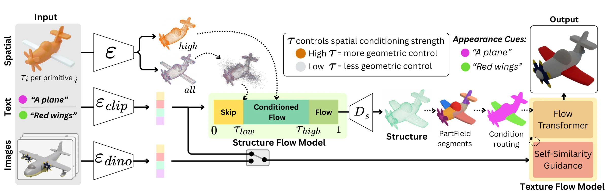
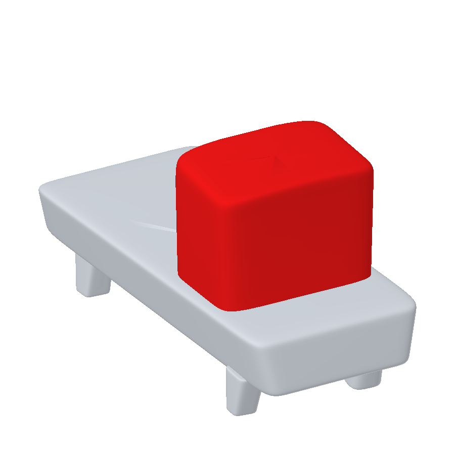
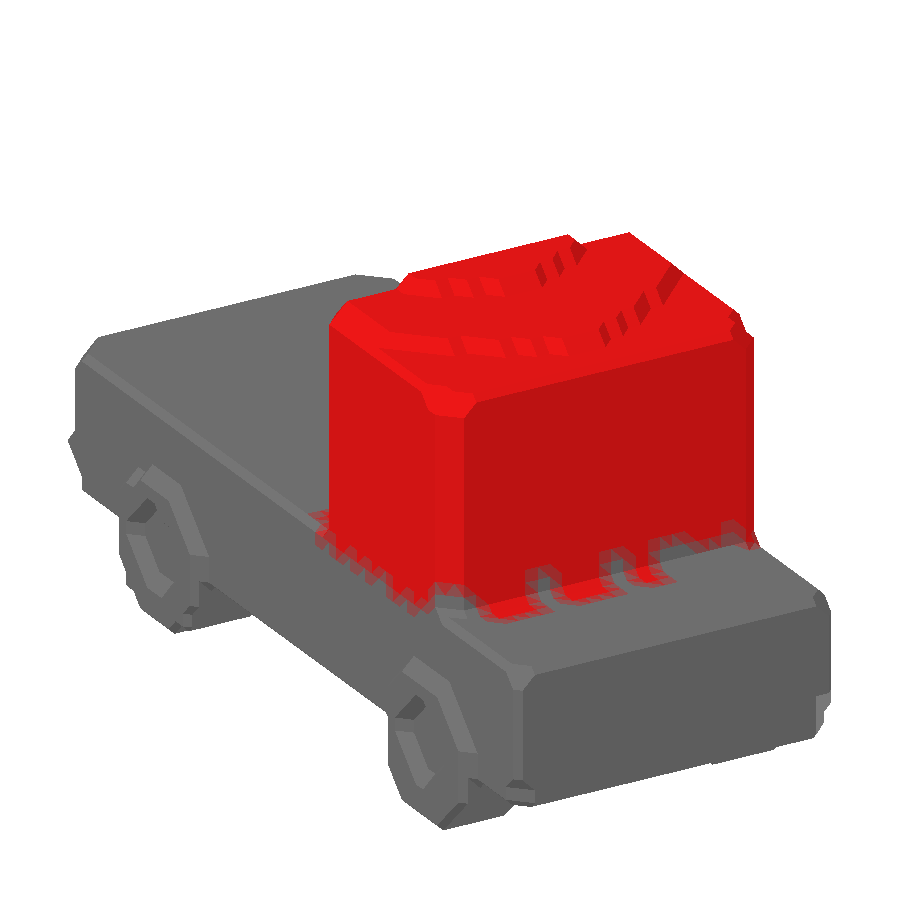
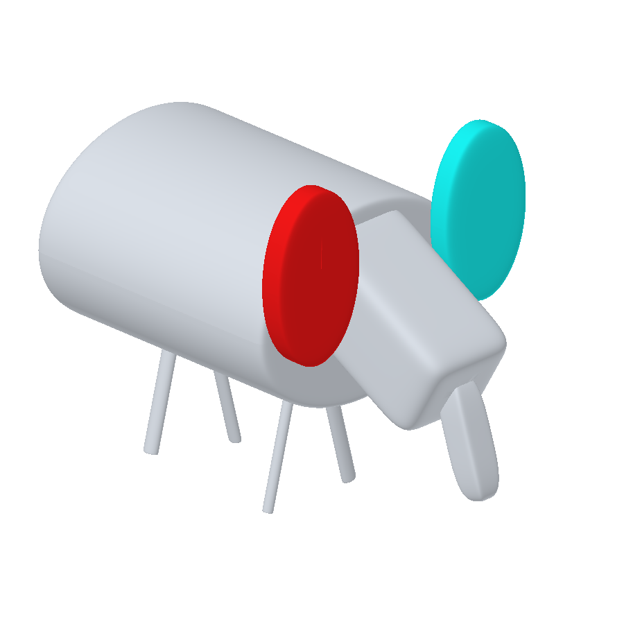
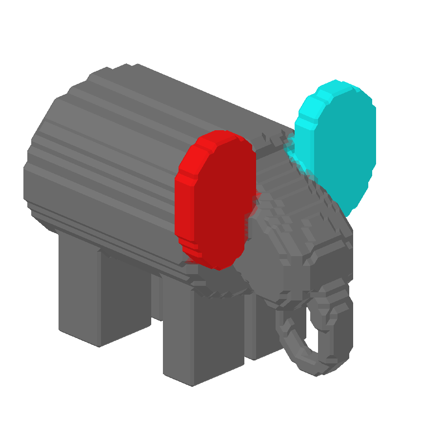
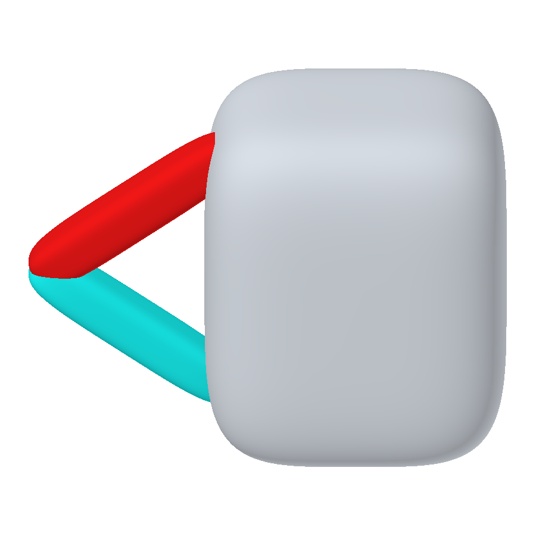
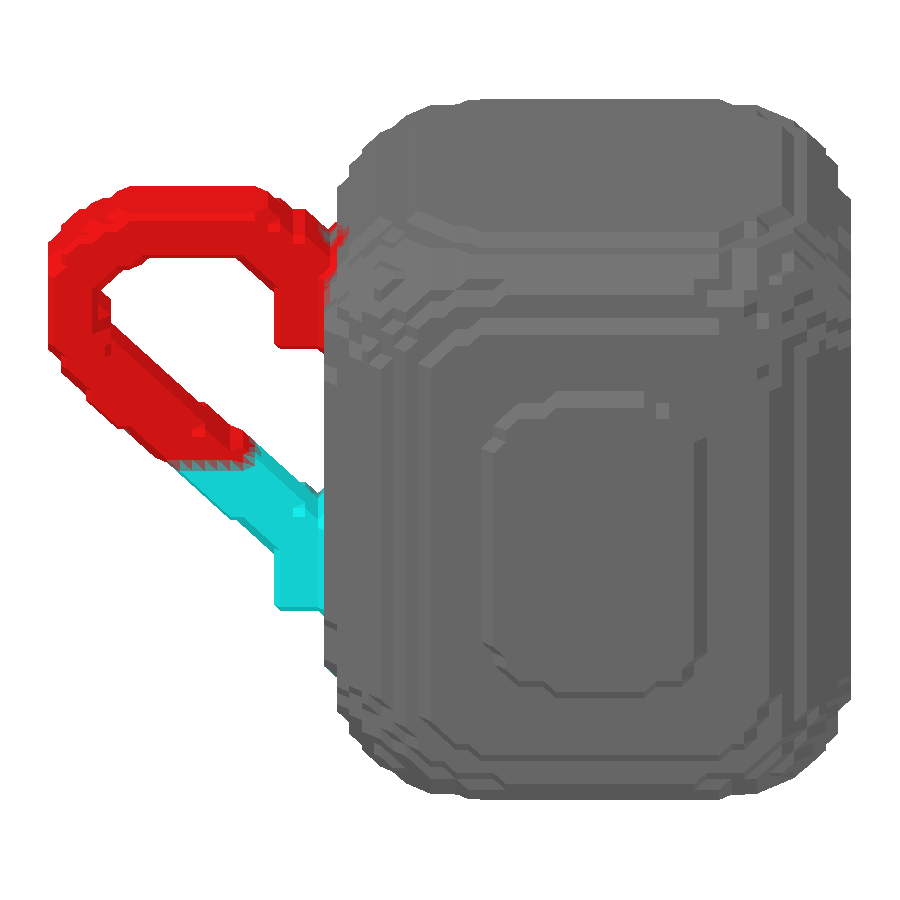
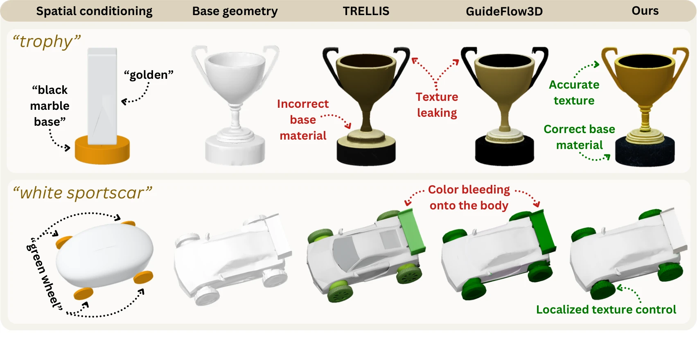

Local geometric guidance
Per-part control levels determine the balance between adherence to the input primitives and generative completion.
ETH ZÜRICH / STANFORD UNIVERSITY
Training-free 3D generation with local geometric control
and part-specific text or image appearance conditioning.
1 ETH Zürich2 Stanford University* Equal contribution
Geometric inputs and corresponding SpaceFlow outputs. Interactive examples
01 / OVERVIEW
SpaceFlow assigns geometric control strengths and appearance conditions to individual parts of a generated 3D asset.
Each input primitive represents an object part. Strong geometric guidance encourages adherence to the input shape, while weak guidance allows prompt-conditioned completion. During appearance generation, text or image cues are routed to the corresponding regions of the generated structure.
The pretrained generator remains frozen throughout both stages.
Current 3D generation methods lack explicit local control: geometric adherence is often defined by a global control strength, and appearance cannot be specified locally. We present SpaceFlow, a training-free pipeline for locally controllable 3D generation from text descriptions and a collection of geometric primitives. Each primitive serves as a proxy for an object part and is assigned a local control level, enabling users to specify whether regions should strictly follow the input shape or allow generative completion. During structure generation, we enforce these spatial constraints within the generative flow process. For appearance synthesis, the generated structure is segmented and matched to the primitives. Each generated part is conditioned only on its assigned text or image cue, thereby limiting cross-part leakage. Regional geometry metrics demonstrate that SpaceFlow preserves the specified geometry in high-control regions and enables plausible shape variation in low-control areas. A user study further indicates that the resulting balance between geometric fidelity and generative freedom remains competitive in overall quality. When evaluating appearance on fixed geometry, text-conditioned routing achieves state-of-the-art prompt faithfulness and color/material accuracy. Qualitative results additionally show localized routing of image cues.
Per-part control levels determine the balance between adherence to the input primitives and generative completion.
Routed conditioning associates each text or image cue with its target part, limiting appearance leakage across regions.
The same geometric inputs define local constraints for structure generation and cue assignments for appearance synthesis.
02 / VIDEO
Primitive editing, structure generation,
and local appearance conditioning.
The demonstration presents SpaceFlow’s interactive workflow: authoring part-level geometric inputs, assigning strong and weak geometric control, generating 3D structure, and specifying appearance for individual parts with text or image conditions. The interactive comparisons on this page provide additional saved results that you can inspect at your own pace.
03 / METHOD
SpaceFlow applies local guidance during sampling. Input primitives specify geometric constraints and associate text or image cues with object parts.
The input consists of editable geometric parts, each with a local control level and an optional text or image appearance cue. Deformable superquadrics provide a compact representation for specifying these parts.

Input primitives are matched to regions of the generated structure. Corresponding colors identify the same appearance condition; gray regions receive the global condition. These colors indicate cue assignments, not the final materials.






Selected examples from supplementary Figure S9. Routing is represented on a 32³ voxel grid using 30 PartField clusters.
04 / EVALUATION
Geometry and appearance are evaluated separately to isolate the contribution of each control mechanism.
83assets
Multipart objects with strong and weak geometric control regions and local appearance prompts.
Across the paper’s geometric-control benchmark, SpaceFlow improves the balance between geometric fidelity and generative completion.
Read the evaluation protocol ↗Overall preference balances fidelity to the input and realism. These are VLM-judge results over 83 assets, aggregated by majority vote across three passes; intervals are 95% Wilson confidence intervals.
The paper compares localized text-conditioned appearance with TRELLIS and GuideFlow3D variants. Holding geometry fixed isolates how faithfully each method follows the assigned text cues. Image-conditioned routing is demonstrated separately.

Conflicting shape and text. If a prompt contradicts the constrained geometry, the model can produce distorted results as it tries to satisfy both.
Part boundaries and fine details. Appearance routing depends on the generated part decomposition and a finite-resolution routing volume. A mismatch between a semantic cluster and a material boundary can cause texture leakage or incomplete coverage.
See the supplementary material for failure cases and the full discussion.
05 / RESOURCES
The paper, the workflow, and the generated assets.
@misc{delafuente2026spaceflow,
title = {SpaceFlow: Locally Controllable 3D Generation},
author = {De La Fuente, Neil and Lafuente Baeza, Joan and
Sayfiddinov, Mukhammadali and Scharitzer, Felicia and
Pollefeys, Marc and Çelen, Ata and
Deb Sarkar, Sayan and Fedele, Elisabetta},
year = {2026},
note = {Preprint}
}Preprint citation. Publication metadata will be updated with the release.